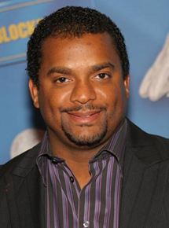

Um Maluco no Pedaço- Série 1990
A série conta a história de Will (Will Smith), um jovem de origem humilde que se muda para um luxuoso bairro na Califórnia. ... Contudo, por ser um garoto humilde e não ligar para os estudos, Will vive se comportando de maneira inadequada e provocando trapalhadas aos seus tios e primos na mansão.

Elenco
Will Smith

Alfonso Ribeiro